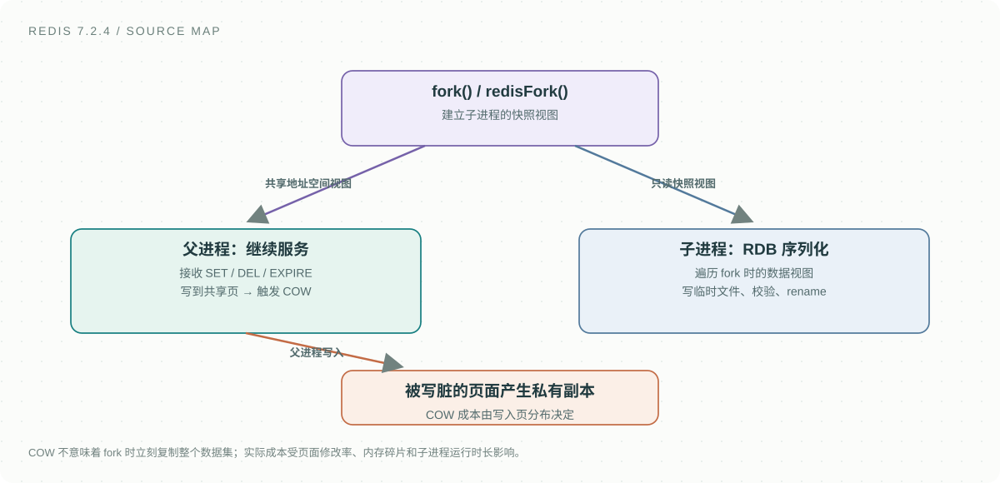
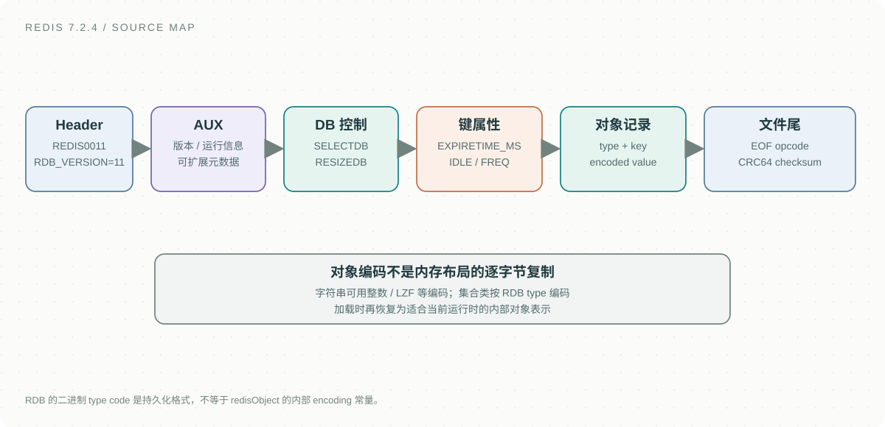
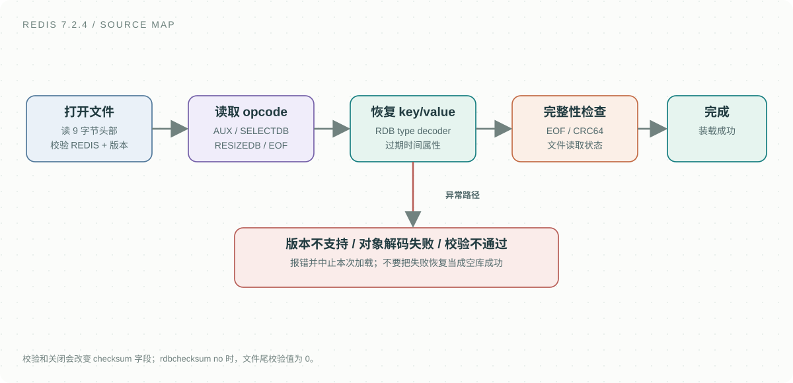

Chapter 17 / Redis 7.2.4 Source Anatomy
RDB 持久化：fork、Copy-on-Write 与二进制快照
从 rdbSaveBackground、RDB v11 opcode、对象序列化、临时文件原子替换到 rdbLoad 校验，完整理解 Redis 7.2.4 快照的时间边界与内存代价。
RDB 保存的不是一串操作，而是某个时刻的数据快照
RDB（Redis Database）文件把 Redis 当前数据集编码成紧凑的二进制快照。与 AOF 记录写操作不同，RDB 更接近“在一个明确时间边界上，把当时仍有效的键和值序列化”。它适合离线备份、跨机器传输和较快的冷启动恢复；代价是两次快照之间的写入不一定包含在最近一个 RDB 中。
自动快照由 save seconds changes 规则触发，也可通过 SAVE 或 BGSAVE 主动请求。SAVE 在主线程同步执行，可能阻塞服务；生产场景通常关注 BGSAVE，但后台 fork 仍有短暂的主线程开销和 Copy-on-Write 内存成本。
fork 产生快照视图：COW 复制的是被修改的页面
rdbSaveBackground() 在 Redis 7.2.4 中通过 redisFork(CHILD_TYPE_RDB) 创建子进程。子进程执行 rdbSave()，父进程继续处理客户端写入。fork 后父子进程起初共享物理页；当父进程修改某个页面时，操作系统才为写入者建立私有副本，这就是 Copy-on-Write（写时复制）。

因此 COW 开销不是简单地等于“数据集大小再复制一份”。它与 fork 后父进程写入的页面数量、对象分布、内存分配/释放行为、子进程运行时长和操作系统内存页大小相关。写入很密集时，COW 可能导致 RSS 增长和内存压力；数据集很大时，fork 本身也可能造成可见延迟。
可以通过 INFO persistence 中的 RDB fork 与 COW 指标观察实际运行情况。应区分 fork 时长、子进程保存时长和 COW 字节数，不能把它们统称为“RDB 阻塞时间”。
交互为机制模型，不会连接 Redis 服务，也不构成性能或持久性保证。
RDB 文件结构：头部、opcode、键值和校验尾部
Redis 7.2.4 的 src/rdb.h 定义 RDB_VERSION 11。文件头部的 ASCII 标识形如 REDIS0011。加载器首先校验 REDIS 签名，并拒绝版本号小于 1 或高于当前可处理版本的文件。

数据流中包含多个 opcode：SELECTDB 指定后续 key 所属数据库；RESIZEDB 为 keyspace 和 expires 字典提供尺寸提示；AUX 写入辅助元数据；EXPIRETIME_MS 保存毫秒精度到期时刻；IDLE 与 FREQ 可记录 LRU/LFU 信息；EOF 表示主体结束，文件尾再写 CRC64 校验值。
RDB 的 type code 是磁盘格式协议，不等同于运行时 robj->encoding。例如字符串可能以整数或 LZF 压缩形式保存；集合类的序列化格式也不必与当前进程内存布局一模一样。恢复时解码器会构造适合当前 Redis 进程的对象表示。
逐键序列化：过期属性与对象类型共同决定记录内容
rdbSaveDb() 遍历数据库的 keyspace。对带过期时间的 key，保存路径会读取绝对过期时刻，并跳过保存时已经过期的键；尚未过期的键会先写入相应的过期 opcode，再写对象类型、key 和 value。对象类型由 rdbSaveObjectType() 等函数选择对应序列化分支。
RDB 不会将所有值都转换成 JSON。字符串、列表、集合、有序集合、哈希、Stream、模块值和函数库有各自的序列化约定；压缩、整数编码和长度编码都在节省文件空间。模块若要持久化自定义类型，必须通过模块 RDB save/load API 提供配对的序列化逻辑。
| 文件字段 | 用途 | 常见误区 |
|---|---|---|
| EXPIRETIME_MS | 下一个 key 的绝对到期时刻 | 不是保存 TTL 的相对剩余秒数 |
| IDLE / FREQ | LRU idle 或 LFU frequency 元数据 | 不是所有对象都必须有两者 |
| type + key + value | 对象类型及类型专属数据 | 不等于内存中的 struct 原样 dump |
| EOF + CRC64 | 文件结束标记与校验 | checksum 可配置关闭，关闭时为 0 |
rdbSave：临时文件、fsync 与原子替换
rdbSave() 通过 rdbSaveInternal() 写临时文件。rio 抽象把写入操作统一起来；写完数据后执行 fflush()、fsync()，再用 rename() 将完整临时文件替换成目标 RDB 文件，并同步目录。这样可以避免直接覆盖一个尚未写完的正式快照。
后台保存的父进程负责 fork 与状态记录，子进程负责序列化文件；父进程在子进程结束后处理退出状态、指标与临时文件清理。若已有互斥的后台子进程正在执行，新的后台保存可能被拒绝或延迟，而不是无限 fork。
/* Redis 7.2.4：主要调用关系 */
BGSAVE
-> rdbSaveBackground(req, filename, ...)
-> redisFork(CHILD_TYPE_RDB)
child:
rdbSave(req, filename, ...)
-> rdbSaveInternal(tempfile)
-> rdbSaveRio(...)
-> fflush + fsync
-> rename(tempfile, filename)
-> fsync parent directory
parent:
record child pid / save start time
continue serving clients保存失败时应检查磁盘空间、目录权限、文件系统错误、fork 失败和 COW 内存压力；仅凭 rdb_last_bgsave_status:ok 之外的单个日志不应推断备份已安全复制到异地。
RDB 加载：版本门禁、opcode 解码与 CRC64
rdbLoadRioWithLoadingCtx() 先读取文件头，检查签名和版本，再循环读取 type/opcode。遇到 SELECTDB 切换目标数据库，遇到 RESIZEDB 预分配字典容量；过期、LFU/LRU 元数据作为后续 key 的属性暂存，随后按类型解码 key/value 并写入临时加载数据库。

文件读完前必须遇到 EOF opcode；若启用 checksum，加载器还要验证 CRC64。RDB 版本过新、数据类型不受支持、文件被截断、校验失败或模块加载失败都可能让启动加载失败。不要把手动编辑 RDB 二进制文件当作正常恢复方案。
Redis 提供 redis-check-rdb 用于检查 RDB 文件。对关键数据应先复制备份再做任何修复或转换；检查工具通过只读验证不等于备份文件已具备灾备恢复能力。
实验：BGSAVE、检查快照并从文件恢复
以下命令在本地 Redis 7.2.4 构建目录执行。使用临时目录隔离数据文件，避免覆盖当前用户的 dump.rdb。先保存，再检查文件头和校验，最后关闭原实例并用同一目录重新启动。
tmp=$(mktemp -d)
mkdir -p "$tmp/data"
./src/redis-server --bind 127.0.0.1 --port 6390 \
--dir "$tmp/data" --dbfilename dump.rdb \
--save "" --appendonly no
./src/redis-cli -p 6390 SET snapshot:version 7.2.4
./src/redis-cli -p 6390 HSET snapshot:meta source rdb
./src/redis-cli -p 6390 BGSAVE
./src/redis-cli -p 6390 INFO persistence
./src/redis-check-rdb "$tmp/data/dump.rdb"
xxd -l 9 "$tmp/data/dump.rdb"
./src/redis-cli -p 6390 SHUTDOWN NOSAVE
./src/redis-server --bind 127.0.0.1 --port 6390 \
--dir "$tmp/data" --dbfilename dump.rdb \
--save "" --appendonly no
./src/redis-cli -p 6390 GET snapshot:version
./src/redis-cli -p 6390 HGET snapshot:meta source
./src/redis-cli -p 6390 SHUTDOWN NOSAVE
rm -rf "$tmp"预期：redis-check-rdb 报告快照结构有效；文件前 9 字节形如 REDIS0011；重启后两个 key 的值可读。由于命令只验证了单机快照恢复，不代表已经测试 fork 期间高写入负载下的 COW 上限。
快照一致性与灾备：文件生成成功只是第一步
RDB 的优势是快照紧凑、易复制和恢复较快；它并不提供每条写入都立即落盘的保证。若进程在两次快照之间崩溃，最近快照之后的写入可能丢失。生产系统需要定义快照频率、异地备份、校验、恢复演练和保留策略。
当 AOF 与 RDB 同时开启时，启动恢复优先使用 AOF，因为它通常包含更近的写入状态。RDB 仍然是很有价值的离线备份格式，也会被复制全量同步与 AOF RDB preamble 等路径复用。下一章继续追踪 AOF 的 append、fsync 和 Multi-Part rewrite。
固定版本源码与参考
实现细节以 Redis 7.2.4 为准；官方最新文档用于核对概念与运维语义，不能反向替代版本锁定的源码证据。